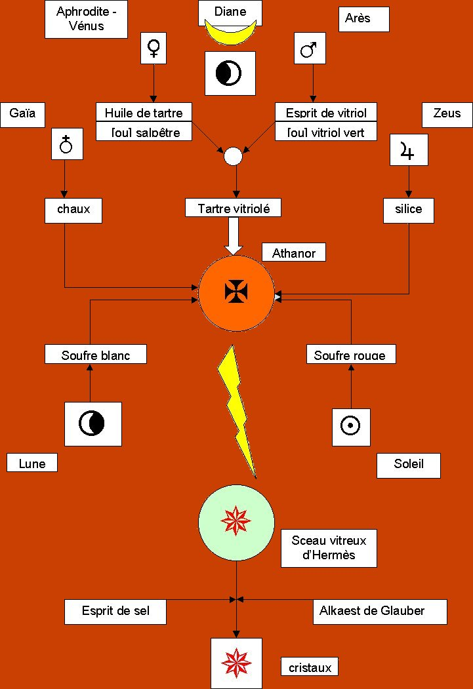
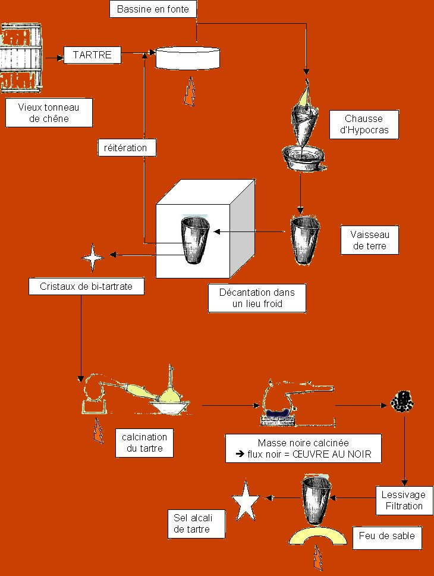

Le Laboratoire alchimique (6) Cette image donne à voir un nouveau schéma de synthèse de la pierre philsophale, très simplifié par rapport aux précédents mais se rapprochant sans doute bien davantage des possibilités de nature des anciens alchimistes. Nous conseillons aux lecteurs qui ne sont pas familiarisés avec la voie du tartre vitriolé d'aborder pour commencer l'étude des textes ou de l'arsenal hermétique.

revu le 27 juillet 2003
Dans cette voie, on comprend immédiatement plusieurs points de symbolisme et en particulier certaines icones, notamment la Clef XII de Basile Valentin. On comprend intuitivement pourquoi l'artiste se tient, armé de prudence, à distance du tonneau enflammé où la Lune et le soleil sont sur le point de se baigner. Ce qui se dégage immédiatement est l'utilisation de trois principes dans l'élaboration du Mercure philosophique, symbolisé par la croix patéee au centre de l'athanor. Ces trois principes, nous en avons beaucoup parlé dans les autres sections et laissons au lecteur tout loisir de s'y attarder. On se bornera ici à un résumé lapidaire :
è la chaux permet de précipiter des silicates en fusion, des oxydes métalliques à l'état de cristaux ;
è la silice permet d'obtenir la fixité des principes du Mercure sans lequel le composé serait volatilisé ;
è le tartre vitriolé -appelé encore sel polycreste ou arcanum duplicatum- permet d'obtenir des cristallisations de sulfates à l'état d'oxydes, en particulier pour l'alumine. Cet arcanum duplicatum est un résumé de nombreuses allégories et permet d'expliquer des détails d'iconographie où l'on parle de voûtes ou d'arcades. Par son caractère double, il permet aussi d'expliquer les références à l'étoile double, si présente dans les textes de Fulcanelli et d'E. Canseliet.

FIGURE I
I)- Préparation du Mercure philosophiqueLes éléments de cette préparation sont groupés dans la partie supérieure de la FIGURE I. Bien sûr, il ne s'agit que d'hypothèses de travail. Commençons par la préparation du tartre vitriolé [sulfate de potasse]. Deux options s'offent à nous :
-la voie de l'huile de tartre et de l'esprit de vitriol
-la voie du nitre et du vitriol vert ;
Il est probable que les alchimistes ont utilisé les deux voies, ce qui pourrait contribuer à expliquer les divergences que l'on observe dans les textes, les allégories ou des détails d'iconographie.è Nitre : Sel de pierre avant tout, il a une double nature, aérienne de par l'azote et chthonienne de par la base qui le constituent. Mais il est très différent du natron des Grecs. Ceux-ci semblent l'avoir connu sous le terme de Ajronitrum. Le nitre, par ailleurs, est la base de la poudre à canon trouvée par les Occidentaux vers 1350. En France, on le tirait avant des vieux platras, des vieilles masures, des écuries, des latrines, des décombres, de vieux bâtiments. Nous renvoyons à la section spécifique pour en savoir plus. Le vitriol vert [sulfate de fer] pourrait aussi bien être remplacé par du soufre vulgaire ou même par de l'huile de vitriol. On peut aussi bien avec les trois préparer le sel polycreste. Il est évident que le vitriol vert, contenant du fer, procure une « charge symbolique » plus profonde que le simple soufre ; en outre, il se trouve que -allégoriquement parlant- le tartre vitriolé se trouve être alors un « résidu misérable » à côté du produit préparé, l'eau forte, qui permet de séparer l'argent de l'or. On mesure à quel point les alchimistes pouvaient ainsi induire en confusion les mercantis et les malhonnètes, plus désireux d'or que de philosophie...
1)- la voie de l'huile de tartre et de l'esprit de vitriolL'huile par défaillance est encore appelée sel fixe du tartre. Pour l'obtenir, on commence par procéder à la distillation du tartre. C'est donc par la préparation du tartre qu'il faut débuter.
è préparation du tartre [on suit la méthode de N. Lemery dans un premier temps].
Le tartre est une matière grossière ou terrestre (en latin : faex ; en grec :trux]. Le tartre dont parle N. Lemery est celui du vin que l'on trouve adhérent aux tonneaux, en pierre fort dure, quelquefois blanche, et quelquefois rouge selon la couleur du vin qui l'a produit. La lie du vin est aussi un tartre liquéfié qu'on brûle et qu'on appelle les cendres qui s'en font Cineres Clavellate [cendres gravelées].¯ on commence par purifier le tartre en faisant bouillir dans beaucoup d'eau telle quantité de tartre que l'on voudra jusqu'à ce qu'il soit fondu. On passe la liqueur chaudement par une chausse d'Hypocras [cf. FIGURE II] dans un vaisseau de terre et on fait évaporer sur le feu, environ la moitié de l'humidité ; on met le vaisseau dans un lieu frais pendant deux ou trois jours et il se formera aux côtés, de petits cristaux qu'on séparera ; il faut ensuite faire évaporer la moitié de ce qui restera d'humidité et remettre le vaisseau à la cave ; il se fera alors de nouveaux cristaux ; on continue ainsi jusqu'à ce que l'on ait retiré tout le tartre ; il faut alors sécher les cristaux au soleil et les conserver. Cette opération n'est donc qu'une purification qu'on fait des parties les plus terrestres du tartre.En terme de chimie moderne, on commence le travail avec du tartrate acide de potasse. Ce sel a été étudié au XVe siècle par Paracelse, puis par Van Helmont, Montet et Desmarest. C'est un des sels les plus anciennement connus. Il porta successivement les noms de crème de tartre, tartrate de potasse, tartre, tartrate acidule de potasse, acide tartareux, sel de tartre. Lorsqu'on calcine ce sel, on obtient un résidu noir appelé flux noir et désigné par Lémery comme le sel fixe de tartre, mélange de carbonate de potasse et de charbon divisé que l'on emploie comme fondant et comme réductif. Soumis à l'action de l'eau, cette dernière entraine le carbonate de potasse qui, dans ce cas, prend le nom de potasse du tartre. Le tartrate acide de potasse mêlé à deux fois son poids de nitre, et calciné, produit un résidu blanc appelé flux blanc dont on se sert comme fondant. Ce flux est du carbonate de potasse que Lémery nommait sel alkali du tartre et à l'aide duquel on obtenait, en l'exposant à l'air humide, de l'huile de tartre par défaillance qui n'était en définitive qu'une dissolution très concentrée de carbonate de potasse.
à Cette purification s'exécute en grand à Montpellier. Elle est fondée sur le fait que le tartrate acide de potasse est très peu soluble dans l'eau froide alors qu'il l'est beaucoup dans l'eau chaude. Après avoir pulvérisé le tartre, on le fait bouillir avec de l'eau dans une chaudière de cuivre. Lorsque l'eau est saturée, on la verse dans des terrines où elle laisse déposer, par le refroidissement, une couche cristalline presque décolorée. Cette couche est redissoute dans l'eau bouillante ; on délaie 4 à 5 % d'une terre argileuse et sablonneuse dans la dissolution, et on évapore celle-ci jusqu'à pellicule. L'argile s'empare des matières colorantes et il se précipite de la liqueur, à mesure qu'elle refroidit, des cristaux blancs qui, exposés en plein air sur des toiles pendant quelques jours, acquièrent un nouveau degré de blancheur. Ces cristaux blancs sont la crème de tartre pure qui contient toujours un peu de tartrate de chaux. Les eaux-mères servent à faire de nouvelles dissolutions.
¯ on procède ensuite à la distillation du tartre : on remplit les deux tiers d'une cornue de tartre grossièrement pulvérisé ; on place la cornue dans un fourneau à réverbère et on y adapte un grand ballon ou récipient. On débute la distillation par un très petit feu pendant trois heures pour échauffer la cornue et faire sortir le phlegme goutte à goutte. On jette ensuite cette eau insipide comme inutile et, ayant réadapté le ballon, on lute exactement les jointures. Il faut alors augmenter le feu peu à peu : on verra sortir les esprits qui rempliront le ballon de nuages. On continue ainsi en sorte que l'huile sorte aussi ; quand il ne viendra plus rien, on laisse refroidir les vaisseaux et on les délutte. On verse ce que le récipient contiendra dans un entonnoir garni de papier gris afin que l'esprit se filtre et se sépare de l'huile crasse et noire qui restera dans le filtre. Cette huile peut être conservée dans une phiole. Cette huile est pesante et noire, d'odeur empyreumatique [odeur âcre et forte]. L'esprit doit être versé dans un alambic de verre et rectifié en le distillant au feu de sable. Il faut comprendre que cette matière est aqueuse, mercurielle, subtile et sprituelle. On trouve enfin, dans la cornue, une masse noire de laquelle on peut tirer le sel de tartre.
¯ obtention du sel fixe de tartre ou huile par défaillance : on casse la cornue qui a servi à la distillation du tartre et on prend la masse noire. On la calcine entre des charbons jusqu'à ce qu'elle soit devenue blanche. On la jette alors dans une grande quantité d'eau chaude et on la lessive ; celle-ci est filtrée puis versée dans un vaisseau de verre ou de grès et évaporée au feu de sable. Il restera un sel blanc qu'on appelle sel alkali de tartre. La liqueur, ou l'huile faite par défaillance, n'est qu'un sel de tartre dissout dans l'humidité de la cave. Si on veut en faire rapidement, il faut faire fondre le sel de tartre dans ce qu'il faudra seulement d'eau de pluie bien filtrée pour le contenir en liqueur. Notons que l'on peut joindre, au début, l'huile obtenue après distillation à la matière noire. On peut alors pratiquer une calcination à feu ouvert dans un pot de terre non vernissé, jusqu'à ce que le tout soit blanchâtre ; on dissout alors avec de l'eau chaude et on lessive trois ou quatre fois jusqu'à ce que l'eau n'en tire plus aucune saveur ; il faut filtrer toutes ces lixiviations et les faire évaporer peu à peu sans aucune violente ébullition, jusqu'à ce que le dessus commence à se couvrir d'une pellicule. Alors, il faut commencer à agiter la matière qui reste comme il faut avoir soin de rassembler ce qui s'en attache de toutes parts et empêcher aussi qu'elle se coagule au fond du vaisseaau, parce qu'on aurait trop de peine à l'en retirer. Il faut continuer ainsi jusqu'à ce que tout soit converti en un sel blanc et sec, qui est le vrai sel fixe du tartre, qu'il faut mettre dans une bouteille bien séchée et bien la boucher avec un bouchon de liège, afin qu'il ne se refonde pas en une liqueur qu'on appelle improprement huile de tartre par défaillance, oleum tartari per deliquium [selon Paracelse, la liqueur de tartre].¯ le tartrate de potasse ne se rencontre point dans la nature. Il se prépare en saturant par le carbonate de potasse [le sel alkali fixe] l'excès d'acide de la crème de tartre : on fait chauffer une dissolution de carbonate de potasse dans une bassine d'argent ; on y projette, à plusieurs reprises, de la crème de tartre réduite en poudre très fine, et l'on agite presque continuellement la liqueur. Chaque fois qu'on en projette, il se forme une effervescence due au gaz carbonique qui se dégage ; on continue d'en projeter jusqu'à ce que l'effervescence cesse d'avoir lieu. Il est nécessaire que la saturation soit parfaite. On y parviendra toujours en versant successivement de petites quantités de crème de tartre ou de carbonate de potasse, selon que la liqueur sera acide ou alcaline [l'équivalent alchimique de cette opération est le problème du poids de nature comparé au poids de l'art]. Alors, on la filtrera pour en séparer un peu de tartrate de chaux que la crème de tartre contient, ce qui apparaît sous la forme de flocons blancs, on la fera évaporer, on la versera dans des terrines chaudes, et on l'abandonnera à elle-même dans un lieu tranquille. Ce n'est qu'au bout de quelques jours qu'il commencera à se former des cristaux. Pour que la cristallisation ait lieu, il faut que la liqueur soit très concentrée. On observe qu'elle se prend quelquefois en sirop sans donner de cristaux. L'alumine s'y dissout en grande quantité sans que la liqueur devienne sensiblement alcaline.

FIGURE II
La FIGURE II montre un schéma de synthèse du sel alcali fixe de tartre, qui n'est donc que du carbonate de potasse. Le tartre vitriolé peut être obtenu par une combinaison d'huile de tartre [sel alcali de tartre tombé en deliquum] et d'esprit de vitriol rectifié. Pour préparer de l'esprit de vitriol rectifié, il nous faut du vitriol vert [sulfate de fer].è esprit de vitriol : On remplit de vitriol vert les deux tiers d'une grande cornue de grès ou de verre lutée ; on la place dans un fourneau de réverbère clos en y ayant adapté un grand ballon ou récipient. On fait d'abord un petit feu pour éliminer ce qui pourrait être resté d'humidité aqueuse dans le vitriol ; on a alors le phlegme du vitriol [qui ne nous intéresse pas ici]. Après l'avoir extrait du récipient, on pousse le feu ; quand on voit des nuages sortir dans le récipient, on continue jusqu'à ce que le récipient refroidisse. Le feu doit être poursuivi pendant deux à trois jours. Quand les vaisseaux sont refroidis, on renverse l'esprit dans une cucurbite et on y adapte rapidement un chapiteau avec son récipient ; on distille ensuite à un feu très lent environ quatre onces [120 g à peu près] de l'humidité
[ce qui sera l'esprit sulfureux du vitriol. il faut le garder dans une phiole bien bouchée. Cet acide a pour nom esprit sulfureux volatil vitriolique de Stahl ; la seule exposition à l'air libre le ramène à la qualité d'acide vitriolique].
On change alors le récipient, et ayant augmenté le feu, on fait distiller environ la moitié de l'humidité qui est restée dans l'alambic ; c'est ce qu'on appelle esprit acide de vitriol.
è L'alkali fixe et l'acide vitriolique se combinent très bien jusqu'au point de saturation avec chaleur et effervescence. Ces substances se combinent en un sel qui est le tartre vitriolé
[ou sel de duobus, ou Arcanum duplicatum, ou sel polychreste de Glaser ; on trouve aussi chez certains auteurs la dénomination de sel fébrifuge de Sylvius mais il s'agit d'une confusion avec le sel préparé par association d'huile de tartre et du sel ammoniac à on obtient dans ce dernier cas de l'hydrochlorate d'ammoniaque sans rapport avec le sulfate de potasse].
On met dans une terrine de grès quatre onces [120 g] d'alkali fixe étendu dans 12 à 15 fois son volume d'eau. On verse peu à peu de l'acide vitriolique affaibli. Il se fait une vive effervescence ; on continue d'en verser jusqu'à ce qu'il ne se fasse plus d'effervescence et que la liqueur n'ait point de saveur acide ou alcaline : c'est ce que l'on nomme le point de saturation. Alors, on filtre la liqueur et on la fait évaporer jusqu'à légère pellicule. Elle forme, par le refroidissement, de petits cristaux taillés en pointes de diamant : c'est que l'on nomme tartre vitriolé. On détache le sel de la terrine avec la pointe d'un couteau et on le fait égoutter sur du papier gris. On fait évaporer la liqueur de nouveau jusqu'à pellicule ; on obtient des cristaux comme la première fois. On continue ainsi les évaporations et les cristallisations jusqu'à ce que la liqueur ait fourni tout ce qu'elle peut donner de sel. Il reste enfin une liqueur qui n'en fournit plus ; on lui a donné le nom d'eau mère.
Ce sel n'est rien d'autre que du sulfate de potasse. Les cristaux offrent des formes variables ; ce sel cristallise en prismes hexaèdres terminés par des pyramides à six faces. Il se dissout dans 6 fois son poids d'eau à la température ordinaire ou dans 5 fois son poids d'eau bouillante ; il est parfois lumineux dans l'obscurité.
2)- la voie du nitre et du vitriol vert [è cf. section du tartre vitriolé]
corrélat alchimique è le tartre vitriolé [sulfate de potasse] joue un rôle de minéralisateur quand il est chauffé au rouge. En calcinant fortement un mélange de sulfate de potasse et d'un sulfate métallique, ce dernier se décompose et donne un oxyde qui cristallise au sein du sulfate en fusion. Certains phosphates chauffés de la même manière donnent un phosphate alcalin qui se volatilise en partie tandis que l'oxyde cristallise dans le bain en fusion [M.A. Gaudin et Debray ont travaillé en particulier avec le sulfate de potasse].On voit donc que le Mercure philosophique est composé pour partie de tartre vitriolé qui agit comme agent de minéralisation ; les hiéroglyphes spirituels de la préparation de cet agent sont : Vénus-Aphrodite [huile de tartre ou salpêtre] et Arès [acide vitriolique ou vitriol vert].
Quels sont les autres éléments -le patient de Fulcanelli- sur lesquels va agir le tartre vitriolé ? il ne peut s'agir que de sulfates et de silicates qui vont donner le squelette de la future Pierre. Començons par le sulfate d'alumine.II. Le Soufre blanc [sulfate d'alumine ; cf. section chimie et alchimie]
Nous allons ici considérer un mode de préparation simple, à partir de la terre de Samos ou de la terre de Chio [argile très pure]. Le sulfate d'alumine s'obtient en attaquant l'argile par l'huile de vitriol ; on se sert de kaolin blanc : cette matière est réduite en poudre puis tamisée ; elle est calcinée sur la sole d'un four à réverbère pour peroxyder le fer qu'elle contient, ce qui le rend insoluble, tandis que l'argile devient plus perméable et plus facilement attaquable par l'huile de vitriol. Il faut éviter de calciner trop l'argile car elle éprouverait une trop forte contraction qui s'opposerait à l'action de l'acide. Il est nécessaire de remuer avec un ringard à lame fourchue, afin de multiplier et de renouveler la surface en contact avec l'air. Au bout de trois ou quatre heures, la nuance étant devenue rosée et régulière, on retire l'argile pulvérulente qui tombe devant le four et l'on recommence une opération semblable.
A noter qu'à la place du sulfate d'alumine, on peut se servir d'alun et de sulfate de potasse : c'est ce que faisait M.A. Gaudin [Comptes rendus Acad. Sci. : Production de saphirs blancs en cristaux limpides isolés, au feu de forge dans des creusets ordinaires, 716-718].III. La silice
On l'a vu dans la section des blasons alchimiques, la silice sert d'une part de fixateur au Mercure philosophique mais entre aussi dans la composition des pierres préparées [néso-silicates]. La silice est presque toujours associée à l'alumine au sein des argiles. La silice a été pendant longtemps regardée comme une terre que l'on nomma successivement silex, terre siliceuse ou terre vitrifiable. La silice est un oxyde, c'est donc une « chaux » du silicium. C''est un des composés les plus stables. Elle est infusible et fixe au feu de forge mais au rouge vif, peut être entraînée par un courant de vapeur d'eau. L'acide silicique se combine, à une température élevée, avec tous les oxydes et forme des sels très stables qui portent le nom de silicates ; la plupart d'entre eux sont convertis en verre par la chaleur. Les plus fusibles et les seuls solubles sont ceux à base de potasse et de soude. L'insolubilité des silicates métalliques est un point intéressant qui permet de faire une expérience qui a parfois été rapportée par les historiens de l'alchimie. Voici ce qu'on peut en dire : si, dans une solution de silicate de potasse, on laisse tomber quelques petits cristaux d'un sulfate de cuivre ou de fer [vitriol bleu ou vitriol vert], il se produit au bout de quelques heures une brillante végétation. En mélangeant les sulfates, on obtient des arbustes de couleur variée ; ceux de cuivre sont verts, ceux de fer sont bruns ou verdâtres et leur ensemble présente assez bien l'image d'une forêt en miniature. Comme tous les silicates terreux et métalliques, insolubles, sont attaqués à une haute température par les alcalis qui les convertissent en silicates alcalins, on se sert de cette propriété pour rendre solubles dans l'eau et les acides un grand nombre de substances minérales. Quand la silice est pure, elle consitue le quartz hyalin ou cristal de roche. Ce minéral sert à faire des vases d'ornements, des instruments d'optique, des verres de lunettes
[il faut se rappeler l'emblème XLII de l'Atalanta fugiens de M. Maier où l'on voit un vieillard, qui n'est autre que l'incarnation du Mercure et qui s'aide de son bâton - ou bourdon- et qui scrute le chemin avec ses lunettes].
C'est dans les terrains cristallisés que se montrent les plus beaux cristaux de quartz. En Italie, les splendides échantillons de cristal de roche sont connus dans le commerce sous le nom de diamants de la Tolfa, parce qu'on les trouve près de l'alunière de la Tolfa, aux environs de Civita-Vecchia.
Quand le cristal de roche est coloré par des traces d'oxydes de fer et de manganèse, il forme un grand nombre de pierres précieuses naturelles [cf. les sections sur le Soufre et sur chimie et alchimie, en particulier] assez estimées comme la topaze du Brésil, le rubis de Bohême et l'améthyste. Associé à des matières étrangères et coloré par les mêmes oxydes, l'acide silicique constitue les espèces minérales utilisées aussi dans la bijouterie, qui portent le nom d'agate, de calcédoine, de cornaline, d'héliotrope, de chrysoprase, d'aventurine, etc. Les agates servent aussi, à cause de leur dureté, à la confection de mortiers, de molettes et de brunissoirs. L'opale, si recherchée dans la bijouterie, l'hydrophane sont de l'acide silicique hydraté.
Les pierres meulières [cf. la meule du château de Dampierre-sur-Boutonne], entre lesquelles on écrase le blé ; les silex avec lesquels on fait les pierres à fusil et à briquet ; les grès qu'on utilise pour le pavage des routes, etc. constituent de l'acide silicique simplement mélangé de quelques sbstances étrangères, notamment l'alumine et l'oxyde de fer. L'acide silicique est aussi très répandu dans le règne organique ; il est surtout très abondant dans l'épiderme des graminées, des palmiers [cf. section sur les blasons alchimiques]. La paille du blé en renferme jusqu'à 70 %.IV. Le Soufre rouge [cf. section sur le Soufre]
A suivre